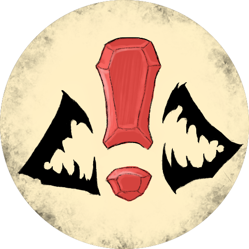
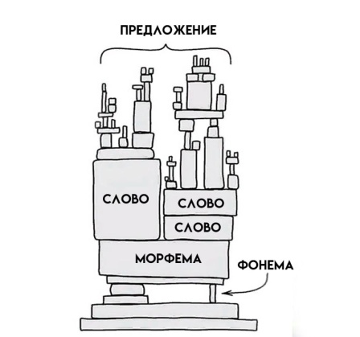

Система языка
Дизайн и функционал
Главная функция языка — коммуникативная. То есть, язык является средством общения, передачи информации в пространстве и во времени. Да, во времени тоже: сегодня вам ничто не помешает узнать что-нибудь у Стива Джобса, который умер в 2011 году, потому что его выступления сохранились в записи. Впрочем, насчёт «узнать» — это уже про когнитивную функцию: с помощью языка мы можем усваивать знания. Думаем мы тоже с помощью языка, ещё одна его функция: мыслительная.
На языке создаются песни, стихи, романы и другие произведения искусства: так реализуется его эстетическая функция. С помощью языка мы налаживаем отношения с другими людьми (регулятивная функция), пытаемся управлять ими (директивная) или влиять на их психику (суггестивная). И это ещё не всё! Есть ещё аккумулятивная функция, этническая; даже — магическая… Одним словом, язык захватил буквально все сферы нашей жизни. Отсюда напрашивается вывод, что именно развитая, уверенная речь является главным средством для того, чтобы получить то, что вы от жизни хотите.
Язык — это знаковая система, которая состоит из разноуровневых единиц: фонема, морфема, слово, предложение, текст.
Фонема
Более понятным словом было бы «звук». Но звук — это единица речи, а мы говорим о языке. В языке же звуку соответствует фонема — обобщённый образ звука. Представьте, как звучит «г» в слове «говорить» и в слове «Бог». Чувствуете? Звуки разные. А фонема одна. Звуков в речи — чрезвычайно много! Потому что каждый человек произносит одни и те же, казалось бы, звукосочетания по-разному. Звуки нельзя сосчитать, а фонемы — пожалуйста: в русском языке их сорок две.
Морфема
Морфема — это значимая часть слова. Корень, приставка, суффикс, окончание — вот основные морфемы русского языка. Как легко увидеть, они строятся из фонем. И, в отличие от фонем, уже что-то значат сами по себе. Сможете ли вы определить значение звука «к»? А про значение приставок или суффиксов уже можно говорить. Допустим, у вас две подруги, обе Вики, и одну вы зовёте Викуся, а другую — Викец. Чувствуется разница в характере девушек? Суффиксы (и приставки тоже) добавляют свой оттенок к значению корня — так получаются новые слова.
Слово
Для изучения слов тоже есть свой раздел науки — лексикология. В русском языке около 250 000 слов. Но в жизни каждый из нас использует порядка 3000-4000. При этом слова проходят, так сказать, «личностные настройки». Закройте глаза и представьте себе дом. Какой он: бревенчатый деревенский? Или городская многоэтажка? Свет в окнах погашен или горит?
А теперь попросите друга: пусть тоже представит себе дом. Вы увидите: ваши дома не будут похожи. И это ещё простое слово, с конкретным значением! Что говорить про абстрактные понятия, такие, как «любовь». Для кого-то любить — это заботиться о человеке. А для кого-то — считать его своей собственностью. Поэтому, общаясь с кем-то, не худо выяснить, какой смысл он вкладывает в важные для вас слова. Что для вашего работодателя значит «хорошая» работа, например. Или «хорошая» зарплата.
Предложение
При помощи предложений люди передают друг другу информацию. Если слово просто называет объект или явление, то в предложении уже содержится мысль, суждение о чём-то, вопрос или выражение эмоций. По-настоящему мы общаемся не с помощью слов, а с помощью предложений. (Именно поэтому бессмысленно учить списками иностранные слова — учите лучше фразы.) Предложение также прокладывает мост от действительности к нашему сознанию — и обратно.
Текст
Текст — самая крупная единица языка, законченное высказывание. Люди изучают язык и его законы с одной-единственной целью — уметь порождать тексты.